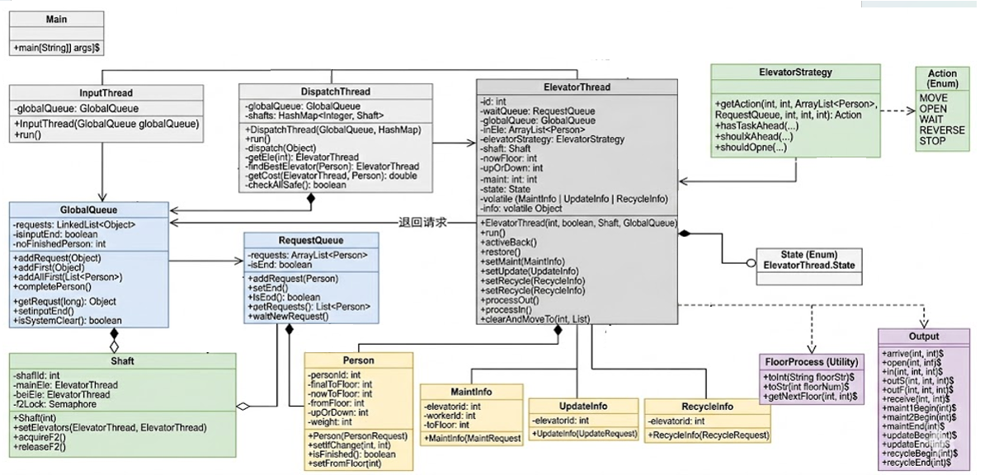

迭代作业最终架构设计
U2最终实现的是一个双轿厢电梯的多线程调度任务。
最终作业整体架构如下图所示：

整体架构由15个类组成，主要使用生产者-消费者模式，划分为以下四个层次：
- 系统启动与核心线程（灰色）
Main：负责全局共享资源的初始化，创建启动所有功能线程。InputThread：生产者线程，将原始请求解析为对应的实体对象并投入全局队列。DispatchThread：调度决策线程，从全局队列提取请求，并根据实时电梯状态将其分配至最合适的电梯/井道。ElevatorThread：执行器线程，模拟电梯物理运行，通过状态机转换执行任务。
- 共享资源与缓冲区（蓝色）
GlobalQueue：连接InputThread与DispatchThread，存储所有待分配的原始请求。RequestQueue：每个电梯线程私有的任务队列，存储已分配但未完成的请求。
- 运行逻辑与策略管理（绿色）
Shaft：管理同一井道两个轿厢，处理双轿厢模式下的逻辑。ElevatorStrategy：运行策略，封装LOOK算法，决定电梯在当前状态返回什么动作。Action：定义电梯基础原子动作
- 实体信息与工具支撑（黄色、紫色）
- 请求（黄色）：
Person：乘客实体，记录基本信息方便调用。MaintInfo / UpdateInfo / RecycleInfo：指令类。- 辅助类（紫色）：
FloorProcess：楼层处理类，楼层预处理方便策略类调用。Output：输出辅助类。
同步块的设置 & 锁的选择
在本单元作业中，我主要采用了synchronized关键字来保护共享资源。
锁的选择
所有的RequestQueue和GlobalQueue内部使用synchronized保护其持有的LinkedList。
与Lock相比，感觉synchronized的自动释放和等待/通知机制更不容易出错，而且在临界区逻辑较短、竞争并不激烈时，性能差距几乎可以忽略。（对Lock还不是很熟悉）
同步块设置
同步块主要设置在生产者存入数据（如addRequest）和消费者提取数据（如getOne）的方法上。生产者线程调用addRequest时会获取队列的锁，消费者线程在 waitNewRequest或getRequst时也会竞争同一把锁。
所有同步块规格尽量小，只保护对共享数据结构的操作，不把可能耗时的 I/O 或计算逻辑放在锁内，避免了长时间持有锁导致其他线程阻塞。
处理语句关系：锁确保了在多电梯并发访问同一队列时，请求的分发和提取是原子性的。同时，利用wait()和notifyAll()机制，让电梯在无任务时进入休眠，避免了轮询造成的CPU占用。
此外，电梯自身的一些状态变量如state、minFloor、info等,由于可能被调度线程读取、被电梯线程修改，使用了volatile修饰，保证多线程间的可见性。
三次作业中调度器设计
调度器和程序中线程进行交互
调度器DispatchThread是中转者，分别和输入线程与电梯线程交互。
- 与输入线程交互：它作为
GlobalQueue的消费者，不断获取InputThread放入的请求。 - 与电梯线程交互：它通过代价函数计算，将请求推送至对应
ElevatorThread的RequestQueue队列中。
此外调度器通过读取电梯线程中由volatile修饰的状态变量，判断电梯是否处于维修或改造状态。
从交互进程的角度看，调度器与电梯线程的通信主要通过两个渠道：一是每个电梯自己的RequestQueue，二是电梯对象上的volatile指令。调度器本身并不持有电梯的锁，也不会操作电梯的内部乘客列表，这样既降低了锁竞争，也保证了电梯自身的运行状态不受调度器干扰。
调度策略的性能
运行策略
首先运行策略采用了主流的LOOK算法，主要好处体现在以下方面：- 电梯不会盲目运行，而是通过
hasTaskAhead判断，一旦前方没有本梯可处理的请求，电梯立即REVERSE或WAIT。 - 减少无效空跑，避免了大量空载行程，直接降低了电量消耗。
- 只有当楼层有匹配方向的乘客且电梯未超重时才开门，减少了不必要的启停能耗。
- 电梯不会盲目运行，而是通过
调度逻辑：
调度逻辑主要采用了代价函数。（感觉影子电梯有点玄学且有点难写…）
我在DispatchThread的getCost方法中，通过加权计算实现选择：- 时间指标：
dis * 1.0确保分配距离最近的电梯；bonus = 8.0大幅奖励顺路电梯，减少乘客等待和绕路时间。 - 能效指标：
totalTask * 2.0对任务多的电梯进行适当惩罚。 - 代价函数设置阈值，如果代价过大暂时不派发。以应对大量电梯维修时的大量乘客需求问题。
- 时间指标：
其他策略：
主要体现在维修时或者分轿厢时的接人踢人。
一旦进入REP_ACCEPT及类似有时限的状态，调度器在getEle层面拦截，不再向该梯派发新任务。电梯仅处理已在车内（inEle）的任务。
且如果路上有顺路的乘客，直接送到（3-4次，根据时间限制具体来定）；如果不顺路且方向相反，接到指令的楼层直接踢下；如果顺路但是距离很远，送到检修楼层踢下。
三次作业中的调度策略
第一次初始任务
每个乘客请求已指定电梯ID。调度器仅仅是形式上的设计，仅负责将请求直接按输入分发给对应的电梯线程。
第二次迭代
设计了自由竞争与代价函数。调度器根据Cost=距离+任务数*权重-顺路优势，动态选择最优电梯。引入了维护请求处理，代价过高时（比如电梯维护时）将内部请求退回 GlobalQueue重排。
第三次迭代
调度器大体设计不变，支持双轿厢模式。调度器只需将请求分发给特定的Shaft，由井道内部协调主备轿厢。
关于bug
第二次作业和第三次作业都是被hack了2次，hack了7次，下面具体分析：
分析自己出现的bug
bug1：通过计算代价函数来判断选择哪个电梯，但是如果代价过高则暂时不选择，回退到主队列中。但是对于新来的请求，包括维修请求，都从尾部加入队列，如果大批量请求的话，会没办法及时维修，超过7s。
修改方法也很简单，只要把维修等需要及时响应的请求放在队头即可。bug2：hw7中设置了state等信息，但是没有使用volatile强制同步，其他线程没有及时获取信息。
别人程序的bug
- bug1：全部电梯都维修的时候，有些代码会固定返回一个电梯，导致出错。
- bug2：不设置缓冲区或者类似功能，只要有请求就分派。如果五个电梯全部维修，再涌入大量请求，会超出要求时间导致无法通过。
对多线程程序的debug方法
- 输出调试：多线程不太适用断点调试，所以这个单元都采用了输出调试，比如在每个线程结束时输出信息等等。
- 代码走读：顺着代码的思路完整看一遍，人工脑查。
- AI debug：给AI提供我出现问题的测试点，由AI提供一些可能的问题，由我排查确认。
- 看CPU运行时间：CPU运行时间如果过长则重点检查一下CPU轮询的问题。
线程安全和层次化设计的理解
我认为线程安全在多线程程序中的核心问题主要是两个：可见性和原子性。我在这三次作业中解决它们的方法可以归结为两点：用synchronized保证原子操作，用volatile保证写入的可见性。
层次化设计则让线程安全的维护成本大大降低。拿我的架构来说：
最底层的队列GlobalQueue, RequestQueue内部已经实现了所有必要的同步。调用者可以不用考虑锁的问题，只需要调用addRequest等方法，剩下的线程安全问题由队列类自己负责。
而电梯线程ElevatorThread内部维护了一组状态变量state,info等，这些变量要么是 volatile的，要么在被修改时持有对象锁。Shaft层提供了双轿厢模式下F2互斥的信号量。主备轿厢在需要进入F2时都必须先acquireF2()，离开后再releaseF2()。这个锁也在一定程度上避免了死锁。
DispatchThread完全处于顶层，不修改电梯内部数据结构，只通过队列或指令与下层通信，不会侵入电梯的状态管理，可以线程安全的边界限制在各自的类中。
总之好的层次化设计一定程度上是可以辅助线程的安全性的。
大模型相关使用
与大模型的分工
在本次作业中，我主要使用gemini pro作为辅助工具，分工大概是：
我来负责：核心逻辑设计、优化策略设计、调试决策。
大模型辅助我：提出其他优化策略、分析各种优化策略的优缺点、快速搭建评测机、初步定位bug。
作业中大部分代码均为自己手敲。但是思路方面会借助大模型的框架构建。
尤其是电梯的优化策略问题，选择影子电梯、量子电梯，还是代价函数构建，还是自由竞争。由于策略过多所以在优化方面和AI探讨很多。由AI给出每种方法的优缺点，复杂的地方，以及建议程度。
其余使用大模型情况
- 找bug ：
- 自己的作业：每次写完作业之后都会先交给大模型粗略检查一遍是否有明显bug再提交
- 互测同学的代码：也基本会先由大模型大致检测一遍哪里最有可能出现问题，我再详细看一下具体对应部分的代码
- 评测机搭建：完全由大模型生成，自己只根据效果和大模型进行多轮修改交互
评估效果
在面临多线程电梯这样的复杂任务时大模型具有什么优势，会遇到什么困难？
优点：在面临多线程电梯这种复杂任务时，大模型的优势在于快速生成符合题目要求的框架代码，可以给我提供初步思路。此外，在策略选择如上面提到的影子电梯、代价函数、自由竞争等时，它可以给出清晰的对比和建议，帮助我快速决定方向。
问题：多线程的时序问题非常微妙很难复现，大模型经常会生成看起来正确，但实际依然不对的代码。可能出现死锁或者不满足题目移动要求等一系列问题，需要自己去审查和修正。
另外，让AI生成评测机时，虽然速度很快，但初始生成的测试数据强度很弱且不一定正确，基本只能检验正常逻辑；基本无法仅仅靠大模型构造出能触发bug的数据。（评测的时候发现输出错误一般是评测机写错了…）
使用大模型感受
大模型能帮你跳过枯燥的架构搭建阶段，以及辅助纠结的策略选择问题。但在处理多线程这种对时序很敏感的复杂逻辑时还是需要自己多加思索。
本单元心得体会（兼有本人碎碎念）
U2这个单元让我初步感受到了多线程编程的魅力和痛苦（？）。
第一次实验课的时候觉得生产者-消费者模式不过如此…但越往后加入的东西越来越多，尤其是第三次双轿厢一加上，各种问题就会出现。（比如太空电梯…）
而且多线程问题不可复现好麻烦…发现一个bug不知道再找多久才能再出现一次。第一次运行没问题的数据在测试的时候也有可能出问题。
研讨课上听到大家的各种实现，发现同样是LOOK算法，但是会有很多小小变种。
分配策略更是五花八门，多听听大家的思路（小巧思）还是很有意思的。
此外对于性能分数的心态经历了变化，从执着于最优策略逐渐变成保证正确性就好…感觉优化无止境而且越到最后看着自己的代码越心累…在正确性和优化之间作取舍是合理的。
未来建议
现在的性能分计算公式很清晰，但强测后只得到一个总分。能否给出单项指标（电量或者时间）的分数，这样有可能进行更有针对性的优化？
写在最后
这个月的电梯夹杂在冯如杯中，写的非常匆忙。但也依然还是有一些收获。
虽然电梯月已经过去，但大概之后的很长一段时间看到电梯都会会心一笑了。
感谢U2所有老师和助教的辛苦付出~
如果您喜欢此博客或发现它对您有用，则欢迎对此发表评论。 也欢迎您共享此博客，以便更多人可以参与。 如果博客中使用的图像侵犯了您的版权，请与作者联系以将其删除。 谢谢 ！